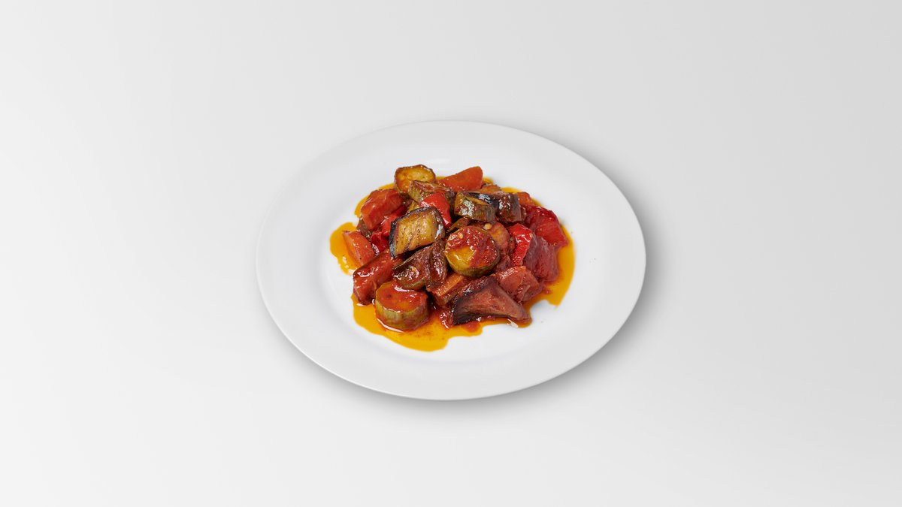

Φυτική ελληνική κουζίνα,
όπως πρέπει.
Η ελληνική κουζίνα ήταν πάντα μισή χορτοφαγική — χτισμένη πάνω στο ελαιόλαδο, τα λαχανικά, τα όσπρια και την πρωινή αγορά. Στο Cookaki στο Κουκάκι, αυτή η παράδοση δεν είναι ένα μενού από συνήθεια· είναι ένα καθημερινό πιάτο μαγειρεμένο από την αρχή, πέντε λεπτά από το Μουσείο Ακρόπολης.
Το Λαχανικό της Ημέρας
Κάθε πρωί μαγειρεύουμε ένα Λαχανικό της Ημέρας (€8,90) γύρω από ό,τι έφτασε από την τοπική λαϊκή — ένα εποχικό λαδερό ή ένα ψητό λαχανικό στον φούρνο. Άλλες μέρες είναι μπριάμ (ψητά καλοκαιρινά λαχανικά), άλλες γεμιστά (ντομάτες και πιπεριές με ρύζι και μυρωδικά), άλλες φασολάκια (κοκκινιστά σε ντομάτα και ελαιόλαδο). Συνήθως μπορεί να ετοιμαστεί vegan κατόπιν αιτήματος — απλώς ρωτήστε τον σερβιτόρο σας.
Αυτή είναι η καρδιά της ελληνικής σπιτικής κουζίνας: τα λαδερά, τα πιάτα «του λαδιού», όπου τα λαχανικά σιγομαγειρεύονται σε καλό ελαιόλαδο μέχρι να γίνουν γλυκά και βελούδινα. Χωρίς ψεύτικο κρέας, χωρίς συμβιβασμό — έτσι ακριβώς μαγειρεύουν τα λαχανικά οι Ελληνίδες γιαγιάδες εδώ και γενιές.

Φυσικά χορτοφαγικά, συχνά vegan
Λαδερά & κυρίως με λαχανικά
Μπριάμ, γεμιστά, φασολάκια, γίγαντες, αρακάς και σπανακόρυζο — κλασική μαγειρική λαχανικών με ελαιόλαδο, τα περισσότερα vegan.
Σαλάτες & μεζέδες
Χωριάτικη σαλάτα, ντάκος με κρητικό παξιμάδι, λαχανοσαλάτα και μια εναλλασσόμενη σειρά από μεζέδες λαχανικών για μοίρασμα. Η χωριάτικη είναι από τη φύση της χωρίς γλουτένη.
Φιλικό σε χωρίς γλουτένη
Το Λαχανικό της Ημέρας και η χωριάτικη είναι χωρίς γλουτένη, και πολλά πιάτα λαχανικών προσαρμόζονται. Πείτε στον σερβιτόρο για οποιαδήποτε αλλεργία και θα σας καθοδηγήσουμε.
Καλό λάδι, αληθινά υλικά
Ολοκληρώνουμε με οργανικό, υψηλής αντιοξειδωτικής αξίας σπαρτιάτικο ελαιόλαδο και προμηθευόμαστε λαχανικά από τη λαϊκή της γειτονιάς — γεύση που γεύεσαι, όχι που κρύβεται.
Γιατί η Ελλάδα είναι εύκολη για χορτοφάγους
Λόγω των πολλών περιόδων νηστείας του ορθόδοξου ημερολογίου, η ελληνική κουζίνα ανέπτυξε ένα τεράστιο ρεπερτόριο νηστίσιμων — πιάτων χωρίς κρέας, γαλακτοκομικά ή αυγά. Αυτό σημαίνει ότι ένας χορτοφάγος ή vegan ταξιδιώτης στην Αθήνα δεν διαλέγει από μια συμβολική γωνιά του μενού· τρώει μερικά από τα πιο αγαπημένα πιάτα της κουλτούρας. Στο Cookaki το αγκαλιάζουμε αυτό: η μαγειρική των λαχανικών αντιμετωπίζεται με την ίδια φροντίδα όπως ο μουσακάς για τον οποίο φημιζόμαστε από το 1956. Ερχόμενοι από την Ακρόπολη ή εξερευνώντας το Κουκάκι, θα φάτε καλά εδώ ό,τι κι αν τρώτε.
Πετμεζά 5, Κουκάκι — 11742 Αθήνα
Ανοιχτά Δευτέρα–Σάββατο 09:00–16:00 και 19:00–22:00· Κυριακή 10:00–18:00. Καλέστε +30 21 0921 9818 ή στείλτε μήνυμα +30 698 237 3505.
Ερωτήσεις για χορτοφαγικά & vegan
Έχει το Cookaki χορτοφαγικές επιλογές;
Έχετε vegan φαγητό;
Υπάρχουν επιλογές χωρίς γλουτένη;
Πόσο κοστίζει ένα χορτοφαγικό γεύμα;
Φάτε τα λαχανικά σας — με τον ελληνικό τρόπο.
Κλείστε τραπέζι στο Κουκάκι ή παραγγείλτε το Λαχανικό της Ημέρας στο ξενοδοχείο σας. Έτσι κι αλλιώς, η αγορά αποφασίζει τι είναι το καλύτερο σήμερα.